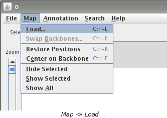
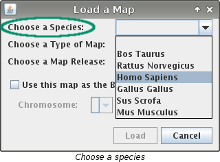
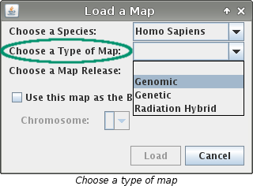
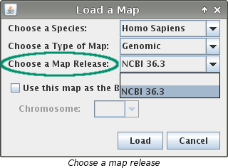
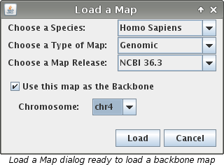

Loading a Map
There are two types of maps that can be loaded: Backbone and
off-backbone (comparative)
How to Load a Backbone Map
If you have just started VCMap you will need to load a backbone map before you can do anything else. You may also want
to load a new backbone map if you want to view data from a different perspective.
- If you just started VCMap, the "Load a Map" dialog box will appear automatically. Skip to step 3.
- Select "Map -> Load..." or use the keyboard shortcut "CTRL + L".

- The "Load a Map" dialog box will contain 3 drop down menus:
"Choose a Species", "Choose a Map", and "Choose a Map Release".
There is also a check box labeled "Use this map as the Backbone". If you have not loaded
any maps yet, the box must be checked. Begin by choosing a species from the "Choose a Species"
menu.

Next choose the type of map from the "Choose a Type of Map" menu.

Finally choose which map from the "Choose a Map Release" menu.
Note: If there is only one choice it will be made automatically.

- Next you need to make sure that the "Use this map as the Backbone" box is checked. If you haven't
loaded any maps yet this box is checked automatically.
- Now you need to choose a chromosome from the "Chromosome" menu. This menu will only be
available if the "Use this map as the Backbone" is checked so double check that it is.

- Finally press the "Load" button. If you are loading your first map a progress bar will appear
and the map will load. If you are loading a new backbone map, a box confirming that you want to load a new backbone
map will appear. Press "Continue" to load your map.
How to load an off-backbone (comparative) map
- Select "Map -> Load..." or use the keyboard shortcut "Ctrl + L".
- The "Load a Map" dialog box will contain 3 drop down menus:
"Choose a Species", "Choose a Map", and "Choose a Map Release".
There is also a check box labeled "Use this map as the Backbone". Begin by choosing
a species from the "Choose a Species" menu.
Next choose the type of map from the "Choose a Type of Map" menu.
Finally choose which map from the "Choose a Map Release" menu.
Note: If there is only one choice it will be made automatically.
- Finally make sure the "Use this map as the Backbone" box is NOT checked and press the
"Load" button to load your map.
Additional Information
- After opening up VCMap you must first load a backbone map. Additional maps can be loaded once the backbone is loaded.
- Upon clicking "Load" a load bar will appear while the map loads. A map takes a few moments to load.
- When loading a new backbone map (other than the first time) all previously loaded data will be cleared. A second dialog
box will appear confirming that this is what you want to do.
See Also